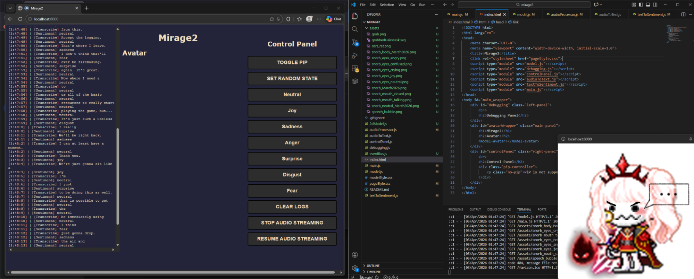
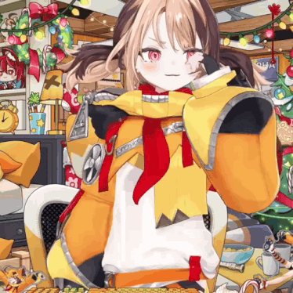
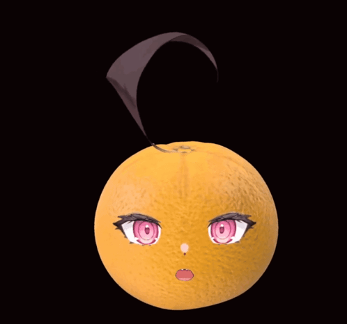
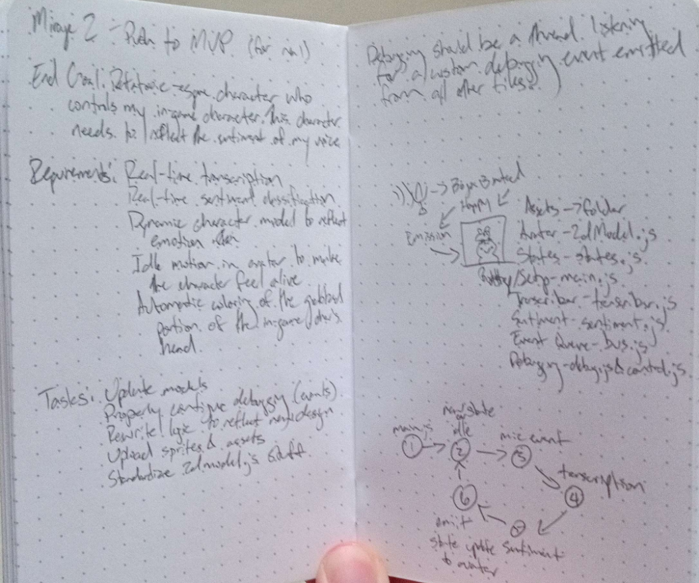

The static version of my current PNGTuber application
Some of you may have noticed it’s been about 18 days since my last blogpost and I have a pretty good reason for that (kind of). Throughout the past ~4 years I’ve been slowly ideating and coding on a custom PNG based application that essentially serves as an objectively worse version of Live2D - a popular tool that can be used to generate Virtual Avatars for streaming. (Yes I know Live2D is used elsewhere ( ͡° ͜ʖ ͡°) ).


While I usually only work on this project when I have motivation (and no other distractions) I decided mid-March that I’d start to push for a 1.0 version which is defined by the following criteria:
At that point I had a framework that I was confident would be enough to satisfy my 9 day blog cycle but unfortunately things (video games) got in the way. But before we get to the result of 18 days worth of procrastinating let’s start from the beginning of this story - the original mirage.
Quite frankly I’m not sure if any images exist (code or final product) but if I do find anything it’ll be placed below:

I did end up finding a demo from October 2023
Unsurprisingly the motivation struck from a combination of watching streams from Hololive talents and a friend sending some papers regarding real-time emotions in the VTuber (Virtual Avatar Youtuber) space. With the near unlimited time I had in university I decided to try creating an easier version of the VTuber software Live2D - a PNGTuber application. On a surface level it’s the most primitive form of a VTuber since you’re basically just a relatively static image placed in the corner of your stream.
Since the concept was relatively simple I was able to get a simple JavaFX application that reacted based on the noise but I wanted to go a little further and add emotions to my model. During my initial research I discovered some researchers at Carnegie Mellon University have created a Java package SPHINX that converts audio input to text via Reinforcement Learning and CNNs. Since I already had the basic app setup it was easy to wire up this package to my existing app but I quickly ran into two major problems. The easier problem to solve was the accuracy of the transcription since I could always provide custom training files and perform a pseudo-transfer learning update. The much harder problem was that there were no performative (and free) Java sentiment analysis models since the thought of using Java in ML would probably cause any researcher to combust violently. But before I could even search the dark depths of Google’s page 2 results I took a step back and evaluated my current PNGTuber app:
With those 3 major blows I decided to shelve the project and let it simmer in my head while I went on with my uni days.
Once I graduated university I found myself with even more time on my hands and I quickly realized it was the perfect opportunity to give this PNGTuber idea another whirl. This time I plotted out most of the architecture with the intention of using a transcription process and a sentiment analysis process to give my PNG blob some pizzazz. Soon after I found myself at the same step as mirage1 - a barebones PNGTuber model that could respond to voice. However the buzzkill wasn’t anything specific - I just kinda lost steam as my j*b start date started approaching. While I did slowly chip at the project whenever I got inspiration it was safe to say that it was basically dormant.
If the title wasn’t obvious then I did in fact complete - in my eyes - the version 1.0 of Mirage2 recently (today at 2am) based on the work I’ve previously done in 2024. So without further ado, let’s start talking about the nitty-gritty of v1.0!

Some notes I had written during March 2026
The language I picked was vanilla Javascript 🙂. Why? Unlike with my usage of Java in Mirage 1 there are some technical reasons for vanilla JS:
And with the project in JS I naturally chose to have it run in the browser and by doing so the app could access some nice additional features:
At a high level here are the components in mirage2 and their general purpose:
From the components and the general features I’ve talked about you can kind of see how the entire app works from a user perspective:
And if you’re curious - here’s what all of this looks like on the screen!
So what’s next?
These are just the obvious tasks I could work on ASAP but for now - I’ll play around with my PNG avatars and become a master of Herblore by bankstanding.